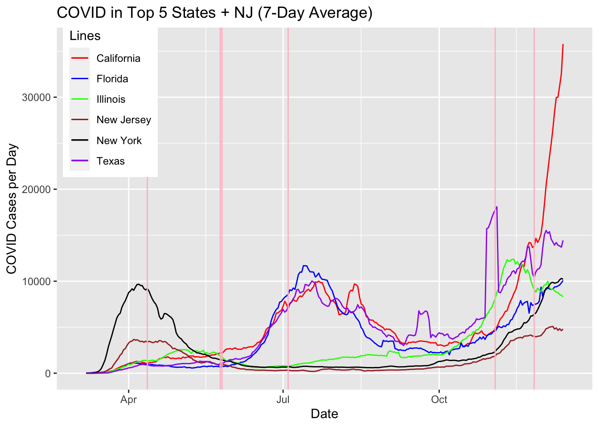
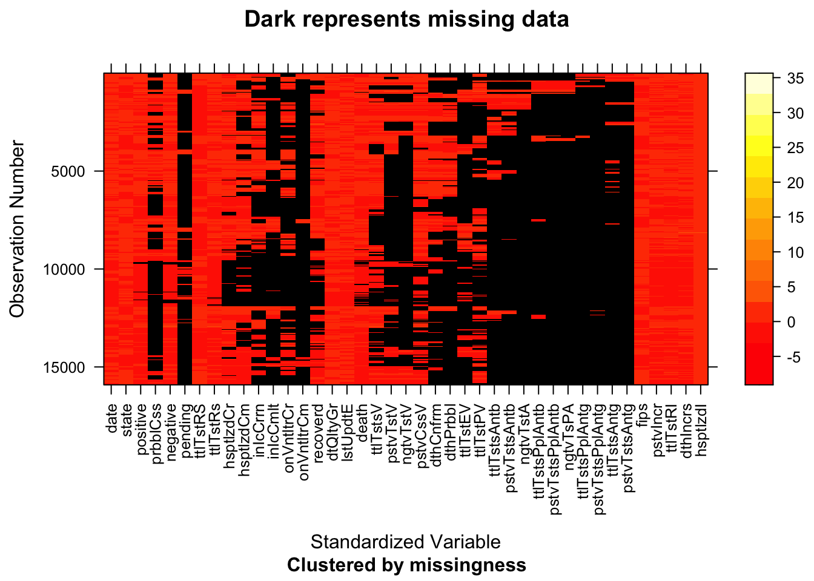
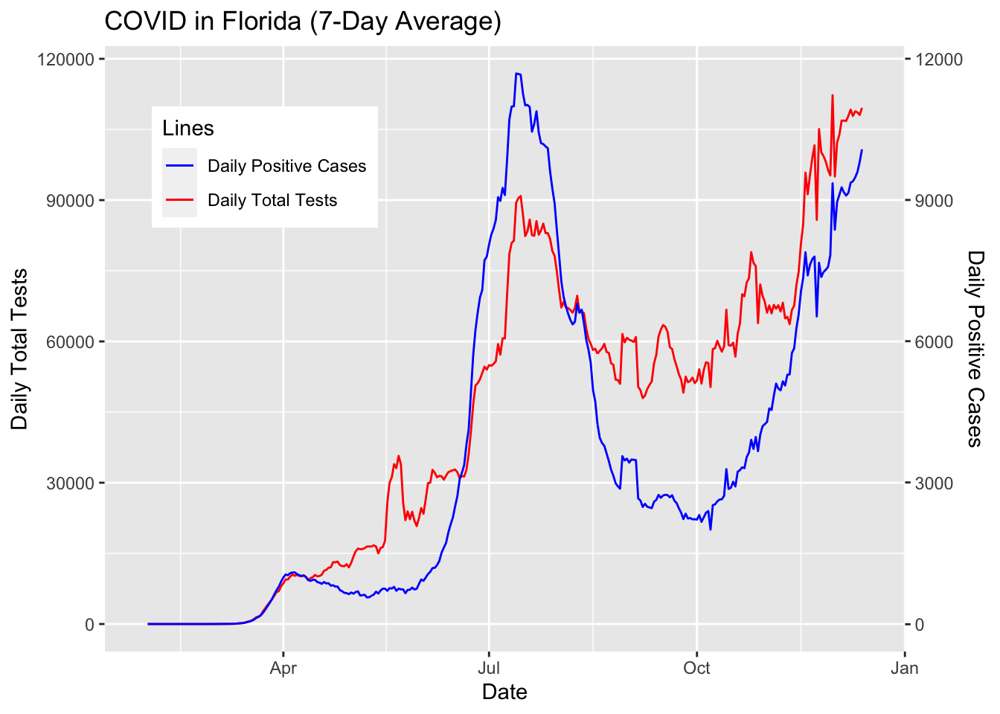
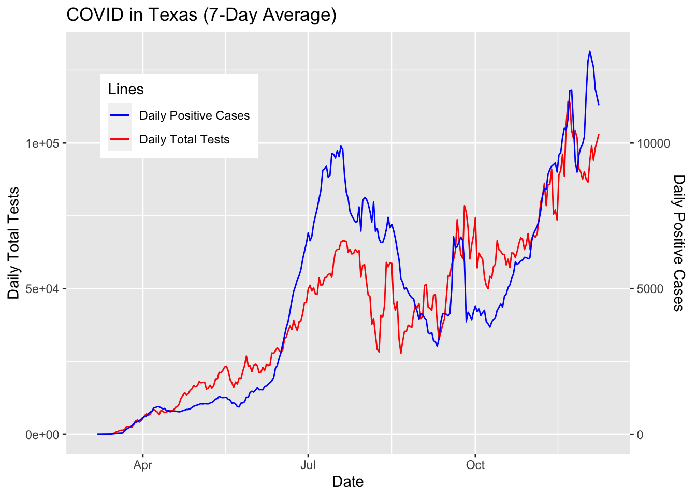
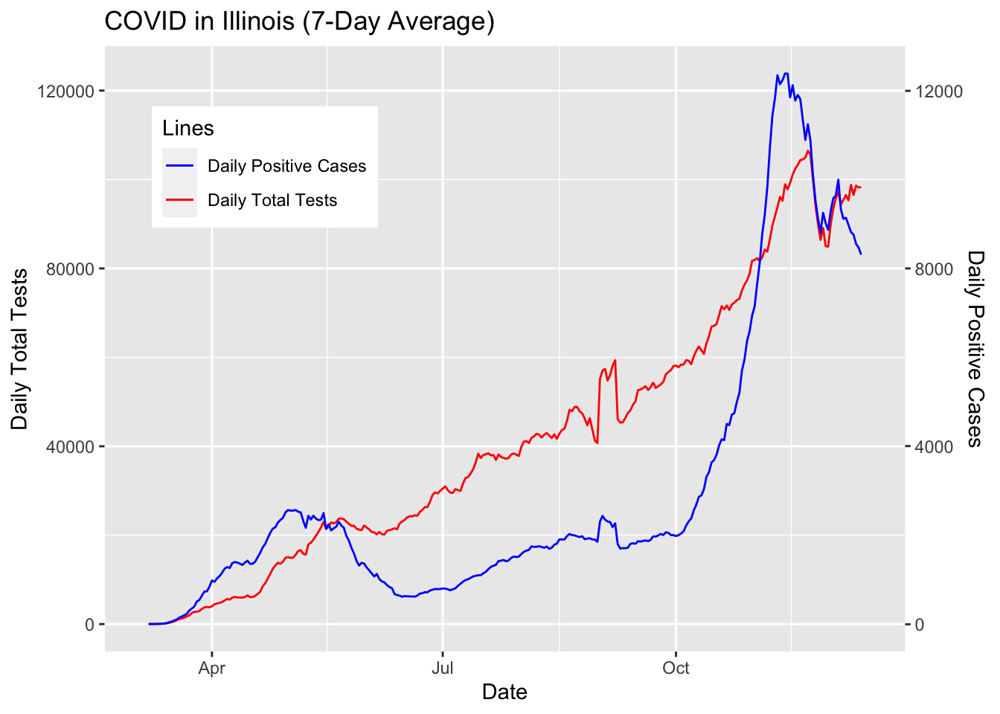
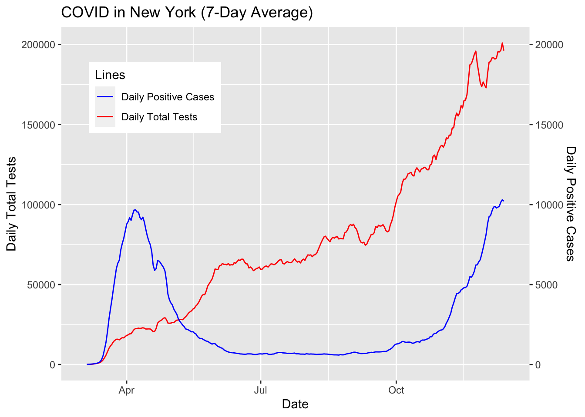

Chapter 4 Missing values
For the state-level dataset, some rows are missing no data and some rows are missing significant amount of data. Fortunately, the crucial columns, including date, state, totalTestResults, positiveIncrease (in COVID-19 cases), negativeIncrease (in COVID-19 cases), totalTestResultsIncrease, deathIncrease, and hospitalizedIncrease, do not have any missing rows.
On the other hand, many of the columns related to hospitalization are ventilators have consistent missingness in data (e.g. hospitalizedCurrently, inlcuCurrently). Furthermore, the detailed columns regarding PCR tests, such as totalTestsPeopleViral (unique people tested at least once via PCR testing) and positiveTestsViral (completed PCR tests (or specimens tested) that return positive) are consistently missing. In order to have the most consistent and fully available column for testing, we will perform our analyses and visualizations using totalTestResultsIncrease for each state.
Also note that below graphs are missing columns regarding Antibody and Antiget tests as those columns are unrelated to the scope of this project.

In our analyses and visualizations, we will focus on certain states that are leading in COVID-19 cases and representing different parts of the country. We can see from the below graphs that data for certain columns are often fully available or fully missing. To avoid any potential inconsistencies, we will proceed with columns mentioned above that are universally fully available for all states.
